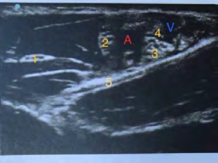

Quelles sont les questions à poser pour évaluer cliniquement le risque hémorragique lors de la consultation d'anesthésie ?
Question 2
Quels sont les items du score de Lee ?
Question 3
Citez les principales raisons physiologiques expliquant la rapidité de la désaturation artérielle en oxygène chez le petit nourrisson.
Question 4
Quels sont les déterminants de la cinétique de la fraction alvéolaire des halogénés ?
Question 5
Citer les contre-indications au suxaméthonium ou succinylcholine ?
Question 6
Comment traiter initialement une intoxication aux anesthésiques locaux ?
Question 7
Comment antagoniser une curarisation au décours immédiat d'une injection de 0,6 mg/kg de rocuronium ? Quel est le mécanisme d'action de cet antagoniste et son délai d'action ?
Question 8
Citer les causes de diminution de la fraction expirée de gaz carbonique sous anesthésie.
Question 9

Décrivez les différents éléments anatomiques observés lors d'un bloc axillaire échoguidé (numérotés de 1 à 5).
Question 10
Quels sont les critères de retour à la rue après anesthésie ambulatoire ?
Question 11
Quels sont les mécanismes physiopathologiques de survenue d'une hypoxémie ?
Question 12
Citez les principaux déterminants du transport en oxygène aux tissus.
Question 13
Quelle est la définition de la pression de perfusion cérébrale ? Quel est l'objectif de pression de perfusion cérébrale minimale chez le patient cérébro-lésé ?
Question 14
Citez 4 facteurs d'agression cérébrale secondaire d'origine systémique (ACSOS) chez le patient cérébro-lésé.
Question 15
Quels sont les facteurs favorisants la coagulopathie lors d'une hémorragie massive ?
Question 16
Traitement d'une réaction anaphylactique per-anesthésique grave.
Question 17
Donner les critères de pré-éclampsie grave.
Question 18
En réanimation, pour évaluer la précharge-dépendance d'un patient en ventilation mécanique en utilisant les variations respiratoires de la pression pulsée. Quels éléments doit-on absolument vérifier pour assurer la validité de cette démarche ?
Question 19
Citer les facteurs de risque d'insuffisance rénale en postopératoire.
Question 20
Citez 5 causes d'acidose métabolique à trou anionique augmenté.
🚀 Rejoignez notre formation complète
Cette annale fait partie de notre programme de formation. Découvrez notre préparation intensive avec corrections détaillées pour maximiser vos chances de réussite aux EVC.